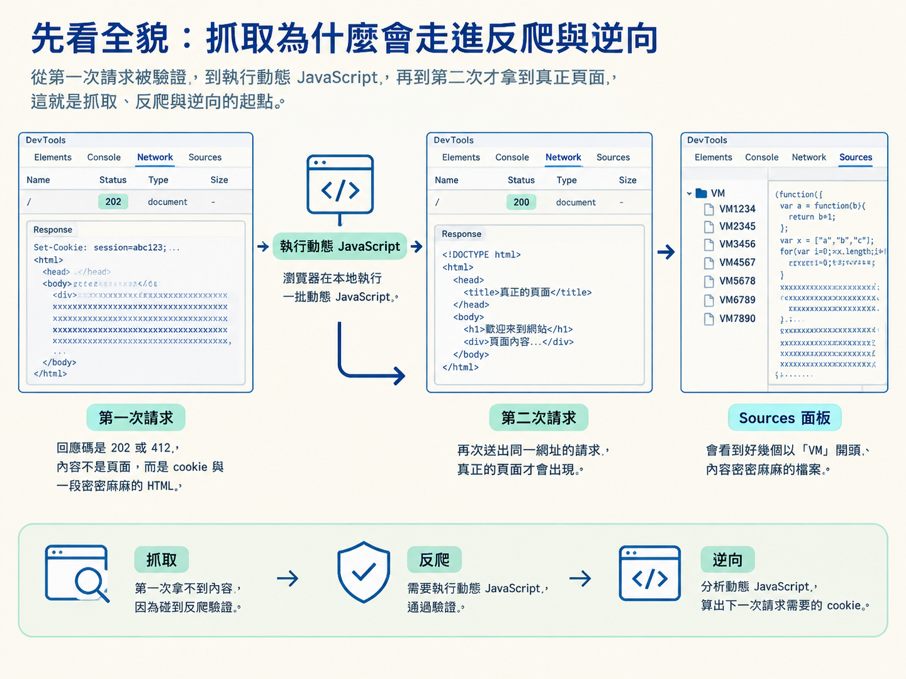
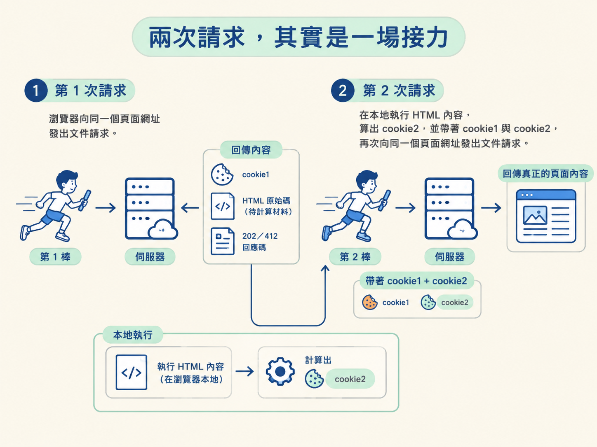
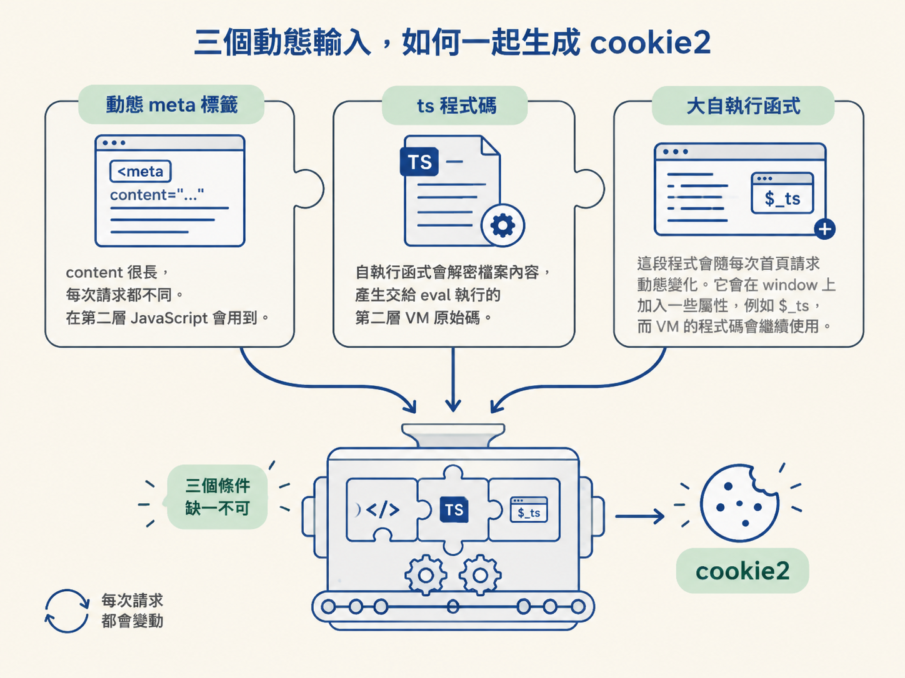
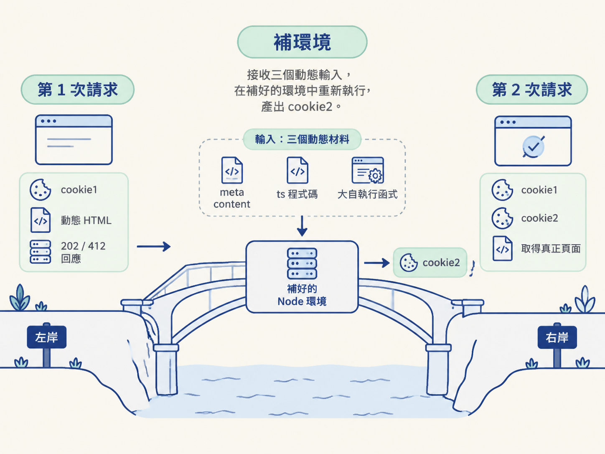

你在 DevTools 的 Network 面板打開目標網址，原本以為第一個文件請求會帶回頁面內容，結果卻只收到 202 或 412。回應裡沒有真正的頁面，反而多了一個 cookie 和一段看似難懂的 HTML。
接著，瀏覽器在本地執行一批動態 JavaScript。等同一個網址再次送出請求，真正的頁面才終於出現。切到 Sources 面板，還會看到好幾個以「VM」開頭、內容密密麻麻的檔案。
這段現象正好把「抓取 → 反爬 → 逆向」串在一起：抓取程式第一次拿不到內容，是因為碰到反爬驗證；要重現瀏覽器通過驗證的方式，就得分析動態 JavaScript，設法算出下一次請求需要的 cookie。

瑞數在瀏覽器與網站之間放了一道關卡，要求用戶端先證明自己能像瀏覽器一樣執行程式碼。這一課要建立的核心概念，就是看懂這道關卡如何靠兩次請求、兩個 cookie，以及三個動態輸入運作。
瑞數是一家提供動態應用安全防護的公司。它的產品核心是「動態安全」，會運用動態封裝、動態驗證、動態混淆與動態令牌等技術，讓伺服器回傳的底層程式碼持續變化。
這就像網站每次都換一把鎖。即使抓取程式記住上一次的答案，下一次也未必能直接使用。對爬蟲來說，瑞數因此成為進入 JavaScript 逆向領域時，很有代表性的一道門檻。
面對這類驗證，實務上主要有三條路。三者的目的相同，差別在於由誰來執行 JavaScript，以及要把演算法理解到多深。
| 路線 | 核心做法 | 適用情境 | 不適合的情境 |
|---|---|---|---|
| 自動化工具 | 交給真正的瀏覽器或自動化瀏覽器執行驗證程式碼 | 希望直接利用完整瀏覽器環境，不自行補齊前端物件 | 目標是把驗證程式搬到 Node 執行時 |
| 補環境 | 把 JavaScript 搬到 Node，補上它需要的瀏覽器物件與行為 | 需要在 Node 中重現瀏覽器的執行條件並產生結果 | 不打算分析程式依賴的前端環境時 |
| 純算 | 完整理解演算法，再使用 Python 等語言重寫 | 已經能掌握演算法，並希望脫離原本的 JavaScript 執行環境 | 尚未看懂核心演算法時 |
本節聚焦第二條路：補環境。它不是憑空產生 cookie，而是接手第一次回應之後的本地計算，模擬瀏覽器執行動態程式碼。
先在 DevTools 的 Network 面板盯住同一個頁面的文件請求。你會看到整個驗證不是一次完成，而是由兩次請求接力。
第 1 次請求送出後，伺服器不會直接交出真正內容。它會回傳 cookie1、一段 HTML 原始碼，以及 202 或 412 的回應碼。
這段 HTML 不是無用的錯誤頁，而是一包「待計算材料」。瀏覽器會在本地執行其中的內容，算出 cookie2。
第 2 次請求再帶著 cookie1 與 cookie2，向同一個頁面網址發出文件請求。兩個 cookie 都到齊後，伺服器才回傳真正的頁面內容。

| 項目 | 由誰產生 | 出現時機 | 用途 |
|---|---|---|---|
cookie1 |
伺服器 | 第 1 次請求的回應 | 交給第 2 次請求一起帶回 |
cookie2 |
用戶端 JavaScript | 收到第 1 次回應後，在本地計算 | 與 cookie1 一起通過第 2 次驗證 |
兩者最重要的差別是來源：cookie1 是伺服器直接發的，cookie2 則是用第 1 次回應裡的動態材料算出來的。缺少 cookie2，第 2 次請求就拿不到真正頁面。
回到 DevTools 查看第 1 次請求的 Response。這段 HTML 裡藏著三個關鍵要素，它們像三塊必須同時到位的拼圖，共同支撐 cookie2 的計算。
meta 標籤
它的 content 很長，而且每次請求都不同。程式執行到第二層 JavaScript，也就是 eval 執行的內容時，會使用這個值。
ts 程式碼
它後面的自執行函式會解密檔案內容，產生交給 eval 執行的 JavaScript 原始碼。這就是第二層的 VM 程式碼。
這段程式會隨每次首頁請求動態變化。它會在 window 上加入一些屬性，例如 $_ts，而 VM 裡的程式碼還會繼續使用這些屬性。

這三項不是可以任意替換的固定常數。它們會隨請求變動，因此不能只抄一次結果，也不能把 cookie2 寫死。補環境真正要做的，是讓這批當次取得的材料，在可用的環境中重新跑起來。
除了觀察兩次文件請求，也可以查看 Application 面板或 Network 面板裡的 cookie。不同瑞數世代，cookie 名稱的後綴會呈現不同特徵。
| 世代 | 兩個 cookie 的後綴 | 後綴 S／O | 後綴 T／P |
|---|---|---|---|
| 瑞數 3、4 代 | 以 S 與 T 結尾 |
第 1 次請求回傳 | 由 JS 生成、動態變化 |
| 瑞數 5、6 代 | 以 S 與 T 結尾（部分特殊 5 代用 O 與 P） |
第 1 次 412 請求回傳 | 由 JS 生成 |
S／T 前面通常會接著 80 或 443 這類數字，而 cookie 值的第一個數字就是瑞數版本。因此，在實際站點看到 cookie 的名稱與格式時，可以先用這些線索大致判斷面對的是哪一代，再決定後續的分析方向。
切到 DevTools 的 Sources 面板後，那些以「VM」開頭的檔案很容易被誤認為網站的專案原始碼。其實，VM 是 Virtual Machine，也就是「虛擬機」的縮寫。
這些檔案是瀏覽器動態生成並執行的臨時腳本。它們不是專案的一部分，也不是伺服器上實際存在的檔案，而是留在瀏覽器記憶體裡，方便開發者除錯。
當程式透過 eval 或 new Function 執行一段字串時，Chrome 需要替這段動態程式碼安排一個可顯示、可下斷點的位置，所以會建立像 VM111.js 這樣的名稱。
換句話說，看到 VM 並不代表你找到了一支真正的 JavaScript 檔案。它比較像 Chrome 臨時搭起的工作桌，讓你能觀察原本藏在字串裡的程式碼如何執行。
.call 找到 VM 入口第 1 次回應裡的 index.html 是動態的。分析時通常會先把它替換成本地版本，讓除錯比較穩定，再直接在 index.html 裡搜尋 .call。
這個位置通常是進入瑞數 VM 的分析入口。以原本的變數為例，_$jL 實際上就是 eval。它的第一個參數，例如 _$iC，是 Window 物件；第二個參數，例如 _$eB，則是 VM 虛擬機裡的 IIFE，也就是立即執行函式。
在這個入口設下斷點並單步執行，就能跟進 VM 環境。之後要觀察的動態程式碼與斷點，也會主要落在這個環境裡。
把整條鏈接起來看，補環境位於「第 1 次請求之後、第 2 次請求之前」。它接收 HTML 裡的三個動態輸入，讓 ts 與 VM 程式碼在補好的環境中執行，最後產出 cookie2。

開始補環境時，常見的起手式如下：先放入 metaContent，對齊最上層物件，再把計時器、事件與部分介面補成不執行實際工作的函式。
metaContent = "pDcfDN8f3jz1r7XPqFGsPL6q9rSYtQFpgNsbPWxFArYi81IxUjQqVJWLCSbyMjvmpPyvkJOGoZQizOfI8SGYRSg.ZWDc2MpBkbeiYeTC0T2n07RtcD7cCyQ_xeajMYzzU28381JavZM7FlN4Pz3whmOha766Uu_TEYu3H4pK.j6M9UQzVj.Y2G"
self = top = window = global;
window.setTimeout = function () {
}
window.setInterval = function () {
}
window.clearInterval = function () {
}
window.addEventListener = function () {
}
window.XMLHttpRequest = function () {
}
window.HTMLFormElement = function () {}這裡的 metaContent 對應第 1 次回應中，meta 標籤的 content。範例展示的是注入位置與環境骨架，但實際抓取時不能把這個值固定寫死，因為它每次請求都可能不同。
因此，補環境不是單純複製一份 JavaScript 就結束。它必須與當次請求取得的資料接在一起：先從第 1 次回應抽出三個動態要素，再注入補好的環境中執行，取出新生成的 cookie2，最後與 cookie1 一起送回第 2 次請求。
瑞數的核心關係可以記成一場兩棒接力：第 1 次頁面請求收到
cookie1、動態 HTML，以及202／412；HTML 裡的動態metacontent、ts程式碼與大自執行函式，會在本地共同生成cookie2；第 2 次請求帶齊cookie1與cookie2，才取得真正頁面。
DevTools 裡的 VM 檔案，則是這段動態 JavaScript 被 eval 或 new Function 執行後的臨時除錯檔案。從 .call 附近找到入口，可以跟進 VM，觀察三個動態輸入如何被使用。
至此，「補環境」也有了明確位置：它不是獨立技巧，而是逆向流程裡的一座橋。前端環境、Proxy、八大物件與環境檢測，都是為了讓這座橋能承接第 1 次回應，重現瀏覽器的本地計算，再把產生的動態 cookie 交給第 2 次請求。